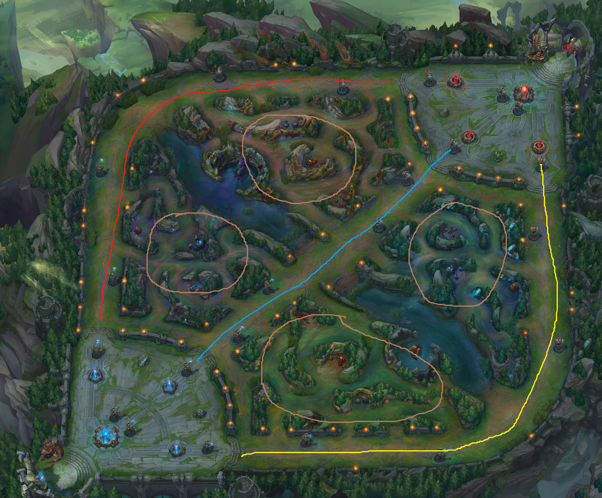

A quick look at win rates in premade groups in League of Legends
Let’s start off this blog with a post about League of Legends. For those of you that are not aware of this game, it is one of the most popular games on the planet at the moment, with 67 million people playing every month, 27 million everyday and over 7.5 million concurrently during peak times, according to its developer, Riot Games.
I have started playing again in the past few months after a hiatus of several months playing Heroes of the Storm, another game of the same genre. League of Legends (now abbreviated to LoL) and Heroes of the Storm (HotS) are both part of what is generally called the MOBA (for Multiplayer Online Battle Arena) genre, even if several terms have arisen to describe it (HotS is marketed as a team brawler, for example).
MOBAs, a brief explanation
Origin
MOBAs are descendants of Defense of the Ancients, or DotA, a custom map for the Warcraft III game by Blizzard Entertainment, which is itself a descendant of Aeon of Strike, a custom map for Starcraft, an earlier Blizzard game. The most popular games of this genre as of today are, in no particular order:
- League of Legends,
- DotA 2,
- Smite,
- Heroes of the Storm
The map
In LoL, two teams of five people fight against each other on a map divided into three lanes, based on the original DotA map. Each player controls a champion, a character with a few abilities and each team must work together to destroy the enemy team’s Nexus, a big structure that lies at the heart of each base. The map looks like the following:

On the bottom-left side of the map is the blue team’s base, with the Nexus, the big blue crystalline structure and on the opposite side, the red team’s base with the red Nexus. As I said, there are three lanes between the bases: top, mid and bottom lane. Every 30 seconds, a bunch of AI-controlled minions will spawn from each base and run toward the enemy base in each of these three lanes. Killing these minions give gold to the player that lands the killing blow and this gold allows a player to buy items to make them more powerful which means they can kill minions (or enemy champions) faster, withstand damage done to them more easily, be more mobile, etc. To reach the Nexus, players must progress through at least one lane by destroying structures along the way (several towers and a special building called an inhibitor) in order to deal damage to the Nexus and eventually destroy it.
Gameplay
As of today, there are 130 different champions in LoL so I won’t go into details but suffice it to say that there are many different archetypes: burst mages, blind martial arts experts, spear-wielding dunkmasters, pig-riding frost queens and many more. It’s free, give it a try.
As I said before, there are three lanes and even though there are many champions, the way they are split between the different lanes (3 lanes for 5 people) has not changed for a few years:
- the red line represents the top lane, which is a solo lane, only one player from each team goes there, usually a tanky champion (able to withstand more damage than the others),
- the blue line represents the mid lane, also a solo lane, usually a mage or an assassin is sent there, their goal is to get as much gold as possible by killing minions (and possibly the enemy mid laner) to be able to inflict a lot of damage on enemy champions during fights,
- the yellow line represents the bottom lane, which is the duo lane, two players from each team are sent there, usually a marksman - a physical ranged damage dealer - and a support, which is a champion that does not need much gold to be effective, thereby leaving all the gold from the minions to their marksman and focusing on utility by protecting them or setting up kills on the enemy team,
- that leaves one player on each team who will go into the brown areas, called the jungle and fight neutral monsters there, in order to gain gold and experience. They will come out periodically to gank (abbreviation of gang kill) enemy lanes: when they show up in a solo lane for example, it is a 2-for-1 advantage for the ganking side, with the purpose of killing the enemy champion in that lane.
I figure this gives enough context for the next part of this post.
Ranked play
Context
All these MOBAs feature a ranked ladder, where each game you play helps determining your placement among all the other players. Most of the time, these systems are derived from the ELO rating system but their actual implementation may vary because the ELO system has been designed for a 1-versus-1 game while MOBAs are usually 5-versus-5 team games.
In the case of LoL, it is even more confusing because there is no way to know your ELO rating (called hidden MMR for Matchmaking Rating and because you can’t see it) and your “skill level” is represented in-game by a system of divisions ranging from Bronze to Challenger. Each division is further split into 5 tiers, from V to I.
After 10 placement matches at the beginning of the season (seasons are one-year long), each player is placed into a division and a tier, for example Silver IV. Each game won in ranked play lets a player earn League Points (or LP) and each loss causes a loss of these LP. Once a hundred LP have been gathered, a player plays a best-of-two (or three if they were in a I tier) promotion match: if they win it, they advance to next tier (or the next division), else they lose a bunch of LP and have to return to 100LP in order to get to this promotion match again.
Rank distribution
You can see on the LeagueOfGraphs website the distribution of the ranks amongst all tiers and divisions. As you can see, about 90% of the population is Gold or lower.
Dynamic queue
Until the 2016 season, the ranked ladder in LoL was called solo queue for the good reason that you could only queue for ranked matches as a solo player or at most with one other player, which is called a premade group or premade for short. If your group contained three or four people, ranked matches were not available: the only option was to play normal games, i.e. games whose wins or losses had no impact on your ranked progression (they even have a different hidden MMR). If you had a group of five, there was a separater ladder, called Ranked Teams with a separate ladder.
Then, Riot Games announced in November 2015 that the solo/duo queue would be replaced with a dynamic queue where you could group up with any number of teammates for ranked matches. This announcement was met with a lot of skepticism from the players who argued that a player’s division would no longer be a reflection of his skill (it is still unclear that solo queue actually WAS a reflection of a player’s skill but that is another debate) but that they could get carried to a higher division by friends that are better at the game than them.
Another argument against dynamic queue was that, as it favored same-size groups in opposing teams, at higher levels of play, it would be difficult to find two groups of say, 4 players, that play at the same time in order to match them against each other. This would cause the algorithm to find another group of 4 people with a lower rating in order to match it with the 4-man high-rated group so queues times are not too long (20 minutes queues are not unusual at this level of play) and this would make for a uninteresting game because of the skill imbalance. We’re talking about top 0.1% here so this would affect a very low number of people but these people are the competitive players that rely partly on solo queue to keep their mechanics fresh and who have a very large community outreach.
This also came as a questionable decision considering the September 2015 announcement by Blizzard that they were removing their dynamic queue system in HotS in favor of a solo/duo queue system, citing reasons (emphasis mine) such as this one:
When we look at the data for parties of three and four players in Hero League, we often see large skill gaps among party members. This is fine for players in a party of four, for example, who have agreed to queue together despite any differences in skill that may exist. However, the matchmaker needs to complete the team by pulling in a fifth player who queued up alone, and did not necessarily want to play with teammates of varying skill levels.
or that one:
This can also create situations in which party members will discuss strategy with each other, but don’t end up communicating the game plan to their fifth teammate. On the other end of the spectrum, solo players may disagree with the party’s decisions, or show unwillingness to help the team. This can result in a friction for both sides if communication doesn’t improve.
There has been a lot of vocal opposition, especially by players that have a very high rank (Challengers usually) and/or professional players (players are paid to compete in season-long championships in Europe, North America, Korea, China and others and there are several international tournaments during the season, like the All-Star event or the Mid-Season Invitational, which culminates with the World Championship which took place across Europe in 2015) :
- here is Meteos from C9, one of North America’s most successful teams, ranting about dynamic queue (NSFW, language):
- here are tweets from professional players, with screenshots of the end-game screen after games where they queued with several members of their team (the team they play competitively with) and got matched against solo players or other less organized groups:
All this circumstantial “evidence”, if we can even call it that, seems to indicate that dynamic queue indeed had a negative effect on the higher levels of play. But if you recall the ranked distributions, the vast majority of the player base is Gold or lower, so what about those players, have they been negatively affected ?
There have been a couple discussions about this in the past couple weeks on the LoL subreddit, like this one or that one but I have yet to see any analysis backed by data.
Impact on regular players
As I said in the introduction, I started playing again a few months ago after a hiatus of several months of playing HotS with my group of friends. After a couple of weeks, I began to get interested in this question of the impact of dynamic queues on regular players. Fortunately, Riot Games provides a very extensive API with a full-fledged documentation, providing you have a level 5 LoL account.
Due to professional and personal constraints, I usually play only a couple of games during the week and more during the weekend if I don’t have anything planned so I am sitting at a mere Gold I for the moment (contrary to my Season 3 Diamond V days  ) but still, not too shabby. After playing some games with my friends, I started to wonder if I was actually profiting from playing with them or if I was better off playing solo (from a purely “ranking up” perspective of course).
) but still, not too shabby. After playing some games with my friends, I started to wonder if I was actually profiting from playing with them or if I was better off playing solo (from a purely “ranking up” perspective of course).
lolapi package
I started by wrapping the API in an R package to make things easier. It is at the moment a plain wrapper of all methods of the API (except two of them that do not interest me at the moment). The data is fetched using the jsonlite package and the resulting JSON is returned with no further processing.
If there is a need for a cleaner output or more methods, I can certainly update the package but this is good enough for me now.
Fetching the data
Let’s start by setting up some libraries:
library(chartjs)
library(dplyr)
library(formattable)
library(highcharter)
library(jsonlite)
library(lolapi)
library(purrr)
library(rvest)
library(tidyr)
chart_size <- "300px"Now we can get the data. The first step is to identify premades in a match. Riot used to provide this information in the API but decided to stop because it brought more harm than benefit. One way to identify people who play together is to get all matches for a given player and scrape this data to find names of players that are regularly on his team. This is a bit sketchy according to this post but I don’t plan on making this on a large scale so I guess I’m okay (Rito please, no LyteSmite). Actually I might do this at scale but I’ll anonymize all player names and ids in this scenario.
The following function fetches all matches for a summoner_name, basically the name of your character in game, and stores information about them in a .rds file, this is good enough for the time being. If the file already exists, it loads it instead of fetching all the data again. This is because, woe is me, I only have a development key and I am limited to 10 requests every 10 seconds and 500 requests every 10 minutes by the API.
get_match_results <- function(summoner_name){
fName <- paste0("../data/", summoner_name, ".rds")
if (!file.exists(fName)){
# Get the summoner id
summoner_id <- summoner(name = summoner_name)[[tolower(summoner_name)]]$id
# Get list of ranked matches in dynamic queue
matches <- match_list(summoner_id = summoner_id,
ranked_queues = "TEAM_BUILDER_DRAFT_RANKED_5x5")$matches
# Extract the match ids
match_ids <- lapply(matches, function(x) x$matchId) %>% unlist
# For each match id
match_results <- lapply(1:length(match_ids), function(i) {
Sys.sleep(1) # To ensure I stay under the rate limit
x <- match_ids[i]
cat(paste0("Fetching match ", i, "/", length(match_ids), ": ", x, "\n"))
# Get the match data
res <- lol_match(x)
# Get the participants id and name
participants_identities <- lapply(res$participantIdentities, function(x) {
data_frame(id = x$participantId,
summoner_id = x$player$summonerId,
summoner_name = x$player$summonerName)}) %>%
bind_rows
# Get the participants team and champion
participants <- lapply(res$participants, function(x) {
role <- if (x$timeline$role %in% c("NONE", "SOLO")) x$timeline$lane else {
x$timeline$role
}
data_frame(id = x$participantId,
team_id = x$teamId,
champion_id = x$championId,
role = role)}) %>%
bind_rows
# Get the winning team
teams <- lapply(res$teams, function(x) {
data_frame(team_id = x$teamId,
winner = x$winner)}) %>%
bind_rows
# Bind all this together
out <- participants_identities %>%
inner_join(participants, by = "id") %>%
inner_join(teams, by = "team_id")
out$match_id <- res$matchId
out$date <- as.POSIXct(res$matchCreation / 1000, origin = "1970-01-01")
out %>%
select(match_id, date, everything(), -id)
})
saveRDS(match_results, fName)
match_results
} else readRDS(fName)
}Curated data
Let’s have a look at this data for my account, Tutuchan.
current_summoner_name <- "Tutuchan"
all_matches <- get_match_results(current_summoner_name) %>%
bind_rowsThis data.frame contains the 102 matches I have played since Dynamic queue started.
f <- function(x) {
case_when(x %in% c("DUO", "DUO_SUPPORT") ~ "support",
x %in% c("BOTTOM", "DUO_CARRY") ~ "adc",
TRUE ~ tolower(x))
}
all_matches$role <- f(all_matches$role)Identifying premades
From this dataframe, we’ll extract the names of the summoners that have been in my team more than once and compute the proportion of matches I have played with them. Then we’ll use the chartjs package to draw a bar chart of this data.
dfPremades <- all_matches %>%
group_by(match_id, team_id) %>%
filter(current_summoner_name %in% summoner_name) %>%
ungroup() %>%
filter(summoner_name != current_summoner_name) %>%
count(summoner_name) %>%
arrange(-n) %>%
filter(n > 1) %>%
mutate(prop = round(n / length(unique(all_matches$match_id)) * 100, 2))
chartjs(height = chart_size) %>%
cjsBar(labels = dfPremades$summoner_name) %>%
cjsEditScale("x", 1, gridLines = list(display = FALSE)) %>%
cjsAddScale("y", type = "linear", position = "right") %>%
cjsSeries(data = dfPremades$prop, label = "proportion") %>%
cjsSeries(data = dfPremades$n, label = "number of games", scale = 2) %>%
cjsLegend() %>%
cjsTooltips(callbacks = list(label = htmlwidgets::JS("function(tooltipItem, data) {
var datasetLabel = data.datasets[tooltipItem.datasetIndex].label || '';
var res = datasetLabel + ': ' + tooltipItem.yLabel;
if (datasetLabel == 'proportion') res = res + '%'
return res;}")))I actually know most of these people and they ARE people I have played with in dynamic queue so it seems to be working pretty well. Some of them are people I got matched with several times without actually queuing with them so let’s filter this a bit more by only selecting people I have played more than twice.
dfPremades <- all_matches %>%
group_by(match_id, team_id) %>%
filter(current_summoner_name %in% summoner_name) %>%
ungroup() %>%
filter(summoner_name != current_summoner_name) %>%
count(summoner_name) %>%
arrange(-n) %>%
filter(n > 2) %>%
mutate(prop = round(n / length(unique(all_matches$match_id)) * 100, 2))
chartjs(height = chart_size) %>%
cjsBar(labels = dfPremades$summoner_name) %>%
cjsEditScale("x", 1, gridLines = list(display = FALSE)) %>%
cjsAddScale("y", type = "linear", position = "right") %>%
cjsSeries(data = dfPremades$prop, label = "proportion") %>%
cjsSeries(data = dfPremades$n, label = "number of games", scale = 2) %>%
cjsLegend() %>%
cjsTooltips(callbacks = list(label = htmlwidgets::JS("function(tooltipItem, data) {
var datasetLabel = data.datasets[tooltipItem.datasetIndex].label || '';
var res = datasetLabel + ': ' + tooltipItem.yLabel;
if (datasetLabel == 'proportion') res = res + '%'
return res;}")))Distribution of the number of premades
Next, let’s take a look at the number of friends I usually play with.
dfSoloVsPremades <- all_matches %>%
group_by(match_id) %>%
summarise(premade_number = sum(summoner_name %in% dfPremades$summoner_name),
win = winner[summoner_name == current_summoner_name]) %>%
group_by(premade_number) %>%
summarise(n_wins = sum(win), n_games = n(),
prop_win = round(n_wins / n_games * 100, 2)) %>%
ungroup() %>%
mutate(prop_games = round(n_games / sum(n_games) * 100, 2))
chartjs(height = chart_size) %>%
cjsBar(labels = dfSoloVsPremades$premade_number + 1) %>%
cjsSeries(data = dfSoloVsPremades$prop_games) %>%
cjsEditScale("x", 1, gridLines = list(display = FALSE)) %>%
cjsEditScale("y", 1, ticks = list(beginAtZero = TRUE)) %>%
cjsTooltips(callbacks = list(label = htmlwidgets::JS("function(tooltipItem, data) {
var datasetLabel = data.datasets[tooltipItem.datasetIndex].label || '';
return tooltipItem.yLabel + '%';}"))) %>%
cjsTitle("percentage of games played by group size")Almost 60% of my games have been played with one or more friends. If we consider duo queue as part of the original solo queue, about 50% of my ranked games could not have been played under this scheme. But does playing with friends actually make me win more ?
Win percentage with premades
chartjs(height = chart_size) %>%
cjsBar(labels = dfSoloVsPremades$premade_number + 1) %>%
cjsSeries(data = dfSoloVsPremades$prop_win) %>%
cjsEditScale("x", 1, gridLines = list(display = FALSE)) %>%
cjsEditScale("y", 1, ticks = list(beginAtZero = TRUE)) %>%
cjsTooltips(callbacks = list(label = htmlwidgets::JS("function(tooltipItem, data) {
var datasetLabel = data.datasets[tooltipItem.datasetIndex].label || '';
return tooltipItem.yLabel + '%';}"))) %>%
cjsTitle("win percentage by group size")It appears that the more friends I play with, the less I win (except for the duo case). Arguably, the sample size is small but still, that was not what I was expecting at all. When I’m playing with friends, we usually are on Mumble in order to coordinate better so this should technically give us an edge, except if the n-man premade opposite us is also on VoIP.
This does not happen to be the case but maybe the reason is not that me or any particular friend of mine actually sucks at the game. I happen to play only two of the five roles that I presented at the beginning and I play each of those about the same amount : these roles are jungle and support. But do I play them the same amount whatever our group number is ?
Role repartition and win rate
dfSoloVsPremadesByRole <- all_matches %>%
group_by(match_id) %>%
summarise(premade_number = sum(summoner_name %in% dfPremades$summoner_name),
win = winner[summoner_name == current_summoner_name],
role = role[summoner_name == current_summoner_name]) %>%
group_by(premade_number, role) %>%
summarise(prop_win = round(sum(win) / n() * 100, 2), n_games = n()) %>%
ungroup()
dfSoloVsPremadesByRoleWR <- dfSoloVsPremadesByRole %>%
select(-n_games) %>%
tidyr::spread(role, prop_win)
dfSoloVsPremadesByRoleNG <- dfSoloVsPremadesByRole %>%
select(-prop_win) %>%
tidyr::spread(role, n_games)
chartjs(height = chart_size) %>%
cjsBar(labels = dfSoloVsPremadesByRoleWR$premade_number + 1) %>%
cjsAddScale("y", type = "linear", position = "right") %>%
cjsSeries(data = dfSoloVsPremadesByRoleWR$jungle,
label = "win rate - jungle") %>%
cjsSeries(data = dfSoloVsPremadesByRoleWR$support,
label = "win rate - support") %>%
cjsSeries(data = dfSoloVsPremadesByRoleNG$jungle,
label = "games - jungle", scale = 2) %>%
cjsSeries(data = dfSoloVsPremadesByRoleNG$support,
label = "games - support", scale = 2) %>%
cjsEditScale("x", 1, gridLines = list(display = FALSE)) %>%
cjsEditScale("y", 1, ticks = list(beginAtZero = TRUE)) %>%
cjsEditScale("y", 2, ticks = list(beginAtZero = TRUE),
gridLines = list(display = FALSE)) %>%
cjsTitle("win rate by group size and role") %>%
cjsLegend()Well, it’s right there: when playing solo or duo, I play much more as a support than a jungler with a win rate that is much higher. When in a group of 3 or more, I usually play jungle more and my win rate is not that high.
My playing support more when solo or duo is not that surprising: when queuing for a ranked game, you can select two roles you want to play and the matchmaking algorithm finds a match for you where you get to play one of these roles (everyone in the match gets to play of their two selected roles). However, support players are much scarcer than any of the other roles as illustrated by this reddit post so when selecting jungle and support, I tend to play a lot of support games.
When in a group of friends, we usually take turns playing the support role as several of us enjoy it and not many of us actually enjoy playing jungle so I’m often tasked with playing it.
This concludes this first blog post, I’d love to hear your feedback if you have any.
Leave a Comment